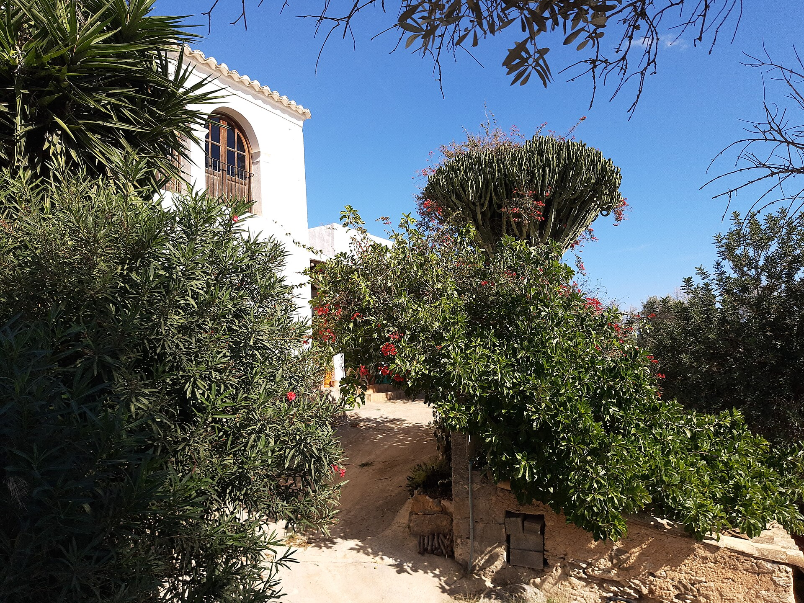

Can Pou
Sant Carles · IbizaA farmhouse with walls a metre thick and a well that still fills in March.
5 bedrooms · 420 m² · 2.1 haGuide €4.9m
Enquire about Can Pou
Solell is a small agency for people buying a home in Ibiza or Mallorca. We keep a short list, six houses at present, and we know each one room by room.

Three in Ibiza, three in Mallorca. We have walked every one of them with its owner, in the morning and again at dusk.

A farmhouse with walls a metre thick and a well that still fills in March.

A village house the colour of the hill behind it, with a walled garden nobody on the street knows is there.

Stone house and tower under the Tramuntana, with forty terraces of olive and one of lemon.
Specimen screen. Solell is a fictional agency; homes and prices are illustrative. Photographs are stand-ins from Wikimedia Commons.